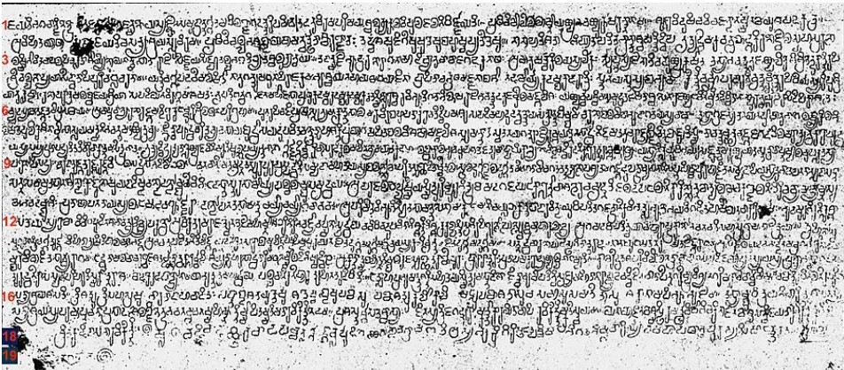

ಯಾವ ಭಾಷೆಗೂ ಮೊದಲು ಲಿಪಿ ಇರುವುದಿಲ್ಲ — ಏಕೆಂದರೆ ಮಾತು ಮೊದಲು ಬರೆಹ ನಂತರ. ಕನ್ನಡದ ಮೊದಲ ದಾಖಲೆ ಸಿಕ್ಕಿರುವುದು ಸಾಮಾನ್ಯಶಕ 2–3 ನೇ ಶತಮಾನದಲ್ಲಿ. ಅದಕ್ಕೆ ಮೊದಲು ಕನ್ನಡ ಭಾಷೆಯೇ ಇರಲಿಲ್ಲವೆಂದು ತಿಳಿಯೋಣವೇ? ಅಥವಾ ಆ ಸಮಯದ ಸುಮಾರಿನಲ್ಲಿ, ಅ ಮೊದಲೇ ಇದ್ದ ಕನ್ನಡ ಭಾಷೆಯನ್ನು ಬರವಣಿಗೆಯ ಚೌಕಟ್ಟಿನೊಳಗೆ ಒಳಪಡಿಸಿದರು ಎಂದು ತಿಳಿಯೋಣವೇ?
ತುಸುವೇ ಯೋಚಿಸಿದರೂ, ಎರಡನೆಯ ಅಭಿಪ್ರಾಯವೇ ಸರಿಯಾಗಿರಬೇಕೆಂದು ತಿಳಿಯುತ್ತದೆ. ಕನ್ನಡಕ್ಕೆ ಹೇಗೋ, ಸಂಸ್ಕೃತ ಭಾಷೆಗೂ ಹಾಗೇ. ಲಿಪಿಯಿಲ್ಲದ ಕಾಲ ಒಂದಿತ್ತು. ಒಂದು ಕಾಲದಲ್ಲಿ ಬರೆಹದ ಶಕ್ತಿಯನ್ನರಿತ ಮೇಲೆ, ಬರೆವಣಿಗೆ ಬಂದಿತು. ಅದು ಬಂದ ನಂತರವೂ ಮೌಖಿಕ ಪರಂಪರೆಯೂ ಜೊತೆಗೇ ಮುಂದುವರೆಯಿತು. ಮುದ್ರಣ ಸಾಧ್ಯವಾಗುವತನಕ ನೆನಪಿನಲ್ಲಿಡುವುದಕ್ಕೆ ಇರುತ್ತಿದ್ದ ಹೆಚ್ಚಾಯ ತಿಳಿದೇ ಇದೆ. ಪುಸ್ತಕಗಳನ್ನು ಪ್ರತಿ ಮಾಡಲು ಇದ್ದ ಕಷ್ಟಗಳು, ತಾಳೆಗರಿಗಳನ್ನು ರಕ್ಷಿಸಿ ಇಡಲು ಇರುತ್ತಿದ್ದ ತೊಂದರೆಗಳು, ಇವುಗಳನ್ನೆಲ್ಲ ನೋಡಿದಾಗ, ಗ್ರಂಥಗಳನ್ನು ಬಾಯಿಂದ ಬಾಯಿಗೆ ದಾಟಿಸುವಂತಹ ಪರಂಪರೆಯೂ ಬರವಣಿಗೆಯ ಜೊತೆಗೇ ಮುಂದುವರೆದಿದ್ದರ ಕಾರಣ ತಿಳಿಯುತ್ತದೆ.

ತಮ್ಮ ಸಾಹಿತ್ಯವನ್ನು ಬೇರೆಯವರಿಗೆ ತಿಳಿಸಬಾರದೆಂದು, ಬರೆಯದೇ ಬಾಯಿಂದ ಬಾಯಿಗೇ ಹೋಗಬೇಕೆಂದು ವೇದವನ್ನು ಕಲ್ಪಿಸಿದರು ಎಂದು "ಆರ್ಯ" ರ ಮೇಲೆ ಗೂಬೆ ಕೂರಿಸುವ ಹಲವರನ್ನು ಕಂಡಿದ್ದೇವೆ. ಅದೇ ವಾದಸರಣಿಯಲ್ಲಿ ನೋಡಿದರೆ, ಕನ್ನಡದ ತ್ರಿಪದಿ ಶೈಲಿಯಲ್ಲಿರುವ ನೂರಾರು ಜನಪದ ಪದ್ಯಗಳನ್ನು ಕೂಡ (ನೂರಾರೇಕೆ, ಸಾವಿರಾರೇ ಇರಬಹುದು), "ಬೇರೆಯವರು ಕಲಿಯಬಾರದೆಂದು" ಪದ್ಯಗಳಲ್ಲಿ ಕಟ್ಟಿ, ಅದನ್ನು ಬರೆಯದೇ ಇಟ್ಟು, ಬಾಯಿಂದ ಬಾಯಿಗೆ ಹೋಗುವಂತೆ ಮಾಡಿದರು ಎಂದು ಹೇಳಬಹುದಲ್ಲ? ಇಂತಹ ವಾದ ಎಷ್ಟು ಟೊಳ್ಳು ಅನ್ನುವುದು ಮನವರಿಕೆ ಆಯಿತೇ? ಇಂಥ ವಾದವನ್ನ ಮಾಡುವರನ್ನು ಕಂಡಾಗ ಅಳುವುದೋ ನಗುವುದೋ ನೀವೇ ಹೇಳಬೇಕಷ್ಟೇ.
ಒಟ್ಟಿನಲ್ಲಿ, ಭಾಷೆ ಬೆಳವಣಿಗೆಯಾಗಿ ಹಲವು ಕಾಲದ ವರೆಗೆ ಲಿಪಿ ಇರಲಿಲ್ಲ. ಲಿಪಿ ಬಂದ ನಂತರವೂ ಅದನ್ನು ಉಳಿಸಿಕೊಳ್ಳುವಂತೆ ಬರೆಯುವ ಸಾಮಗ್ರಿಯ ಕೊರತೆ ಇತ್ತು. ತಾಳೆಗರಿ, ಭೂರ್ಜ ಮರದ ಎಲೆ ಮೊದಲಾದುವುಗಳ ಮೇಲೆ ಬರೆವ ಹಸ್ತ ಪ್ರತಿಗಳು ಆಗಾಗ ಹಾಳಾಗುವುದೂ, ಅವನ್ನು ಮತ್ತೆ ಮತ್ತೆ ಪ್ರತಿ ಮಾಡುವುದೂ ಕಷ್ಟ ಸಾಧ್ಯವಾದ ಕೆಲಸ. ಇನ್ನು ತಾಮ್ರದ ಹಾಳೆಗಳ ಮೇಲೆ ಬಹಳ ಮುಖ್ಯವಾದ ದಾಖಲೆಗಳನ್ನು ಬರೆದಿಡುವ ಕೆಲಸ ಆಗಿದೆಯಾದರೂ ಅದು ಬಹಳ ದುಬಾರಿಯಾದಂತಹ ವಿಧಾನ. ಹಾಗಾಗಿ ಬರಹದ ಬಳಕೆ ಬಂದ ನಂತರವೂ ಪದ್ಯದ ಮೂಲಕ, ಮಾರ್ಗದಲ್ಲಿ ಸೂತ್ರ ಮಾರ್ಗದಲ್ಲಿ ಪುಸ್ತಕಗಳನ್ನು ನೆನಪಿನಲ್ಲಿ ಉಳಿಸಿಕೊಳ್ಳುವ ಪ್ರಯತ್ನ ನಮ್ಮ ದೇಶದಲ್ಲಿ ಮಾಡಿದ್ದಾರೆ. ಇಂತಹ ಪ್ರಯತ್ನ ಹಲವು ಭಾಷೆಗಳಲ್ಲಿ ಆಗಿದೆ. ಅಷ್ಟೇ ಇಲ್ಲಿನ ಒಳಗುಟ್ಟು!
ವ್ಯಾಕರಣಕಾರ ಪಾಣಿನಿಯ ಕಾಲಕ್ಕಾಗಲೆ ಲಿಪಿ ಇತ್ತು ಎಂಬುದು ನಿರ್ವಿವಾದ. ಈತನ ಕಾಲ ಏನಿಲ್ಲವೆಂದರೂ ಇಂದಿಗೆ ೨೭೦೦–೨೮೦೦ ವರ್ಷಗಳ ಹಿಂದೆ. ಅವನ ನಂತರ ಸುಮಾರು ಐದುನೂರು ವರ್ಷಗಳ ನಂತರ ಬಂದ ಚಾಣಕ್ಯನ ಅರ್ಥಶಾಸ್ತ್ರವು ಲೆಕ್ಕ ಪತ್ರಗಳನ್ನು ಬರೆದಿಡುವ ವಿಷಯವನ್ನು ಹೇಳುತ್ತದೆ. ಲಿಪಿಯಿಲ್ಲದೇ ಇದು ಸಾಧ್ಯವೇ? ಹಾಗಾಗಿ ಭಾರತದ ಇನ್ನಾವ ಭಾಷೆಗೂ ಮೊದಲೇ ಸಂಸ್ಕೃತವನ್ನು ಬರೆಯುತ್ತಿದ್ದರು ಅಂತ ಖಚಿತವಾಗಿ ಹೇಳಬಹುದು.
ಈಗ ನಮಗೆ ಸಿಕ್ಕಿರುವ ಮೊದಮೊದಲ ಶಾಸನಗಳು ಪ್ರಾಕೃತದವು, ಆದರೆ ಪ್ರಾಕೃತವೂ ಸಂಸ್ಕೃತದ್ದೇ ಛಾಯೆಯೇ ಹೊರತು ಪೂರಾ ಬೇರೆ ಭಾಷೆಯೆಂದೆನಿಸುವುದಿಲ್ಲ. ಖಾತ್ರಿಯಾಗಿ ಹೇಳಬಹುದೇನೆಂದರೆ ಮೊದಮೊದಲ ಶಿಲಾಶಾಸನಗಳಲ್ಲಿ ಪ್ರಾಕೃತ ಬಳಸಿ ಒಂದೆರಡು ಶತಮಾನಗಳ ನಂತರ ಸಂಸ್ಕೃತ ಬಳಸಿದ್ದಾರೆ ಎಂದು ಅಷ್ಟೇ. ಅದಕ್ಕಿಂತ ಹೆಚ್ಚು ಏನು ಹೇಳಿದರೂ ಅದು ಊಹೆಯೇ.
ಬಹಳ ಜನರು ಸಂಸ್ಕೃತ ಎಂದರೆ ದೇವನಾಗರಿ ಲಿಪಿ ಎಂದುಕೊಂಡು, ಹತ್ತನೇ ಶತಮಾನ (ಸಾಮಾನ್ಯಶಕ) ದವರೆಗೆ ಸಂಸ್ಕೃತ ಬರವಣಿಗೆಯೇ ಇರಲಿಲ್ಲವೆಂಬ ತಪ್ಪು ಅಭಿಪ್ರಾಯವನ್ನು ಇಟ್ಟುಕೊಂಡಂತೆ ಕಾಣುತ್ತದೆ. ಆದರೆ ಸಂಸ್ಕೃತದ ಲಿಪಿಯೂ ದೇಶ ಕಾಲಗಳಿಗೆ ಬದಲಾಗುತ್ತಾ ಹೋಗಿದೆ. ದೊರಕಿರುವ ಇತಿಹಾಸವನ್ನು ನೋಡಿದರೆ ಎಲ್ಲಕ್ಕಿಂತ ಮೊದಲು ಬ್ರಾಹ್ಮೀ ಲಿಪಿ (ಅದಕ್ಕೂ ಮೊದಲು ಯಾವುದಾದರೂ ಲಿಪಿ ಇದ್ದರೆ, ಪಾಣಿನಿಯ ಕಾಲದಲ್ಲಿ, ಅದು ನಮಗೆ ದೊರೆತಿಲ್ಲ. ಅಂದಹಾಗೆ ಸಿಂಧು ಸರಸ್ವತಿ ನಾಗರಿಕತೆಯ ಲಿಪಿಯೇ ಬ್ರಾಹ್ಮೀ ಲಿಪಿ ಆಗಿ ಬೆಳವಣಿಗೆ ಹೊಂದಿದೆ ಅನ್ನುವುದೂ ಹಲವು ಪರಿಣತರ ಅಭಿಪ್ರಾಯ. ಇದಲ್ಲದೇ, ಬ್ರಾಹ್ಮೀ ಅನ್ನುವುದೂ ೧೯ನೇ ಶತಮಾನದಲ್ಲಿಟ್ಟ ಹೊಸ ಹೆಸರು, ೨೦೦೦ ವರ್ಷಗಳ ಹಿಂದೆ ಆ ಲಿಪಿಗೆ ಹೆಸರಿತ್ತೇ, ಹೆಸರಿದ್ದರೆ ಏನು ಎಂಬುದೆಲ್ಲ ಊಹಾಪೋಹವಷ್ಟೇ). ಇದಕ್ಕೆ ಈಚೆಗೆ ಕೆಲವರು ಧಮ್ಮಲಿಪಿ ಎಂಬ ಮರುನಾಮಕರಣ ಮಾಡಿದಂತೆ ಕಾಣುತ್ತೆ. ಅದಕ್ಕೂ ಕೂಡ, ಸಮಕಾಲೀನವಾದ ಹೆಸರಾಗಿದೆಯೆಂಬ ಸೂಚನೆಯಿಲ್ಲ. ಅಶೋಕನು ಧರ್ಮಬೋಧನೆಗಾಗಿ ಮಾಡಿಸಲು ಬಳಸಿದ ಶಾಸನಗಳನ್ನು ಧಮ್ಮಲಿಪಿಯೆಂದು ಈಚೆಯವರು ಕರೆದಿರಬೇಕು.
ಬ್ರಾಹ್ಮೀ ಆದ ನಂತರ ಶಾರದಾ, ವಂಗ, ನಾಗರೀ, ಸಿದ್ಧಂ, ಗ್ರಂಥ, ಕನ್ನಡ/ತೆಲುಗು, ಮಲಯಾಳ, ತಿಗಳಾರಿ, ತಿಬೆಟ್ ಹೀಗೆ ಹತ್ತು ಹಲವು ಲಿಪಿಗಳಲ್ಲಿ ಬರೆದಿರುವುದು ಕಂಡುಬರುತ್ತದೆ. ಈ ಎಲ್ಲ ಲಿಪಿಗಳೂ ಬ್ರಾಹ್ಮಿಯು ಬದಲಾಗುತ್ತ ಬಂದ ಬೆಳವಣಿಗೆಯ ಹಂತಗಳೆಂದು ನೋಡಿದಾಗ ಸಂಸ್ಕೃತಕ್ಕೆ ಲಿಪಿಯಿಲ್ಲ ಎಂಬ ಮಾತಿಗೆ ಹುರುಳಿಲ್ಲವೆಂಬುದು ತಿಳಿಯುತ್ತದೆ.
ಸಂಸ್ಕೃತವನ್ನು ಕೇವಲ ದೇವನಾಗರಿಯಲ್ಲಿ ಮಾತ್ರ ಬರೆಯುತ್ತಿರುವುದು ಇತ್ತೀಚಿನ ರೂಢಿ. ಸಂಸ್ಕೃತವನ್ನು ಹಲವು ಲಿಪಿಗಳಲ್ಲಿ ಬರೆವ ರೂಢಿ ಏಕೆ ಬಂತೆಂದರೆ ದೇಶ ವಿದೇಶಗಳ ವಿವಿಧ ಭಾಗಗಳಲ್ಲೂ ಸಂಸ್ಕೃತದಲ್ಲಿ ಉಪಯೋಗವೆನಿಸುವ ಶಾಸ್ತ್ರ-ಕಾವ್ಯ ಕೃತಿಗಳಿದ್ದದ್ದು. ಅಂಥ ಕೃತಿಗಳು ತಮಗೆ ಉಪಯುಕ್ತವೆಂದು ಸಂಸ್ಕೃತವನ್ನು (ಹೆಚ್ಚಾಗಿ) ಮಾತಾಡದ, ಅಥವಾ ಸಂಸ್ಕೃತ ಜನ್ಯವಾದ ಭಾಷೆಗಳನ್ನು ಮಾತಾಡದ ಪ್ರದೇಶದ ಜನರೂ ಅರಿತಿದ್ದೇ ಅದಕ್ಕೆ ಕಾರಣ. ಆ ದಾರಿಯಲ್ಲಿ, ಒಂದೇ ಭಾಷೆಯನ್ನು ಬರೆಯಲು ತಮ್ಮ ತಮ್ಮ ಪ್ರದೇಶಗಳಲ್ಲಿ ಪ್ರಚಲಿತವಾದ ಲಿಪಿಗಳನ್ನು ಬಳಸಿದರು ಅಷ್ಟೇ. ಒಟ್ಟಿನಲ್ಲಿ ಸುಮಾರು ಹತ್ತನೇ ಶತಮಾನದವರೆಗೆ ದೇವನಾಗರಿ ಲಿಪಿ ಕಂಡುಬರುವುದಿಲ್ಲ ಎಂದ ಮಾತ್ರಕ್ಕೆ ಅಲ್ಲಿಯವರೆಗೆ ಸಂಸ್ಕೃತವನ್ನು ಬರೆಯಲಿಲ್ಲ ಎಂದು ಅರ್ಥವಲ್ಲ ಎಂಬುದನ್ನು ಮನದಟ್ಟು ಮಾಡಿಕೊಳ್ಳಬೇಕು. ಕನ್ನಡದ ಲಿಪಿಯೂ ಹೀಗೇ — ಮೊದಲಿಗೆ ಕದಂಬ, ನಂತರ ಚಾಲುಕ್ಯ, ನಂತರ ಹೊಯ್ಸಳ, ನಂತರ ವಿಜಯನಗರ ಹೀಗೆ ಕಾಲಕಾಲಕ್ಕೆ ಬದಲಾಗುತ್ತಬಂದದ್ದೇ. ಕದಂಬ ಚಾಲುಕ್ಯ ಲಿಪಿಗಳಲ್ಲಿ ಸಂಸ್ಕೃತ ತೆಲುಗು ಕನ್ನಡ ಮೂರೂ ಭಾಷೆಗಳನ್ನು ಬರೆದಿರುವುದನ್ನು ನೋಡುವಾಗ, ನಾವು ಐಹೊಳೆಯ ರವಿಕೀರ್ತಿ ಶಾಸನದ ಲಿಪಿಯನ್ನು "ಕನ್ನಡ" ಲಿಪಿ ಎಂದು ಕರೆಯೋಣವೋ? ಚಾಲುಕ್ಯ ಲಿಪಿ ಎಂದು ಕರೆಯೋಣವೋ ಎಂಬ ಪ್ರಶ್ನೆ ನಾವೇ ಹಾಕಿಕೊಳ್ಳಬಹುದು.
ಒಟ್ಟಿನಲ್ಲಿ, ಸಂಸ್ಕೃತಕ್ಕೆ ಲಿಪಿಯಿರಲಿಲ್ಲವೆಂದಾಗಲಿ, ಸಂಸ್ಕೃತ ಬಲ್ಲವರು ಬರವಣಿಗೆಯನ್ನು ಧಿಕ್ಕರಿಸಿದರೆಂದಾಗಲೀ ಅಭಿಪ್ರಾಯಗಳನ್ನು ನೀವು ಅಲ್ಲಲ್ಲಿ ನೋಡಿದರೆ, ಅಂತಹ ಬೀಸು ಹೇಳಿಕೆಗಳನ್ನು ನೆಚ್ಚಬೇಡಿ!